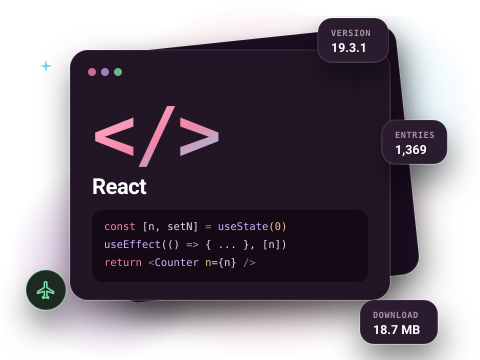
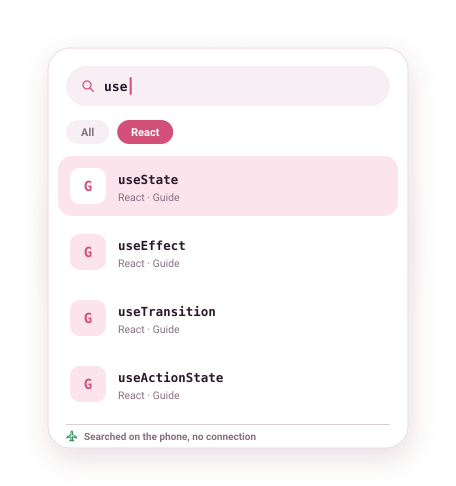

React documentation, offline on Android
The React reference and guides on your phone: every hook from useState to useActionState, every built-in component and API, readable and searchable with no connection.

What is in the React docset
The React docset follows react.dev's reference: one page per hook, component and API, plus the sections inside each page (parameters, returns, caveats, troubleshooting) as their own search entries. That is why it has 1,369 entries from 179 pages: you can jump straight to the "Caveats" of useEffect.
It is small, about 19 MB, so it is a good first docset to try DevDocs with.
- Version
- 19.3.1
- Entries
- 1,369
- Download
- 18.7 MB
- Source
- Official docset feed

Example entries you can search offline
A few real entries from the React docset's index, as they appear in search results:
| Entry | Type |
|---|---|
| useState | Guide |
| useEffect | Guide |
| useMemo | Guide |
| useCallback | Guide |
| useRef | Guide |
| useTransition | Guide |
| useActionState | Guide |
| createContext | Guide |
| memo | Guide |
| <Suspense> | Guide |
How to get the React documentation offline
- Install DevDocs from Google Play. It is free and needs no account.
- Open the Store tab and search for React.
- Tap Download. The docset downloads in the background (18.7 MB compressed) and is indexed on your phone.
- Open Search or the docset in your Library. From now on it works with no connection.
Tips for searching the React docs
- Search a hook name to open its reference page, then use the in-page sections (Usage, Troubleshooting) as anchors.
- Bookmark the hook pages you check most; bookmarks reopen at the saved section.
- Add the JavaScript and TypeScript docsets for the language side; search covers all installed docsets at once.
Related docsets
Also in the DevDocs Store: JavaScript, TypeScript, NodeJS, Express, VueJS, Angular. Install any of them and one search covers them all. See also: JavaScript documentation offline.
React docs offline: questions
Which React version is it?
Is React Native included?
Can I search inside a single page?
More answers in the DevDocs FAQ.
Other documentation you can keep offline
- Python 16,146 entries
- Kotlin 12,301 entries
- Java 59,956 entries
- JavaScript 9,447 entries
- Android (Kotlin) 200,572 entries
- Django 5,705 entries
Or browse all 806 docsets by category.
Get the React docs on your phone
DevDocs is free, has no ads and needs no account.